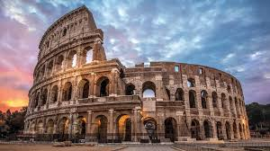

EL COLISEO (ITALIA)
EL COLISEO (ITALIA)

El Coliseo romano, también conocido como Anfiteatro Flavio, es una gran estructura elíptica ubicada en Roma,
Italia, que se utilizó para espectáculos públicos como combates de gladiadores y peleas de animales. Construido bajo el reinado de los emperadores Flavios,
mide 189 metros de largo,
156 de ancho y 48 de alto, y puede albergar a más de 50,000 espectadores.
El Coliseo fue el anfiteatro más grande del mundo romano, con una estructura ovalada de piedra que medía 189 metros de largo,
156 metros de ancho y 48 metros de altura.
Se estima que se utilizaron 300 toneladas de hierro para las grapas que mantenían unidas las piedras.